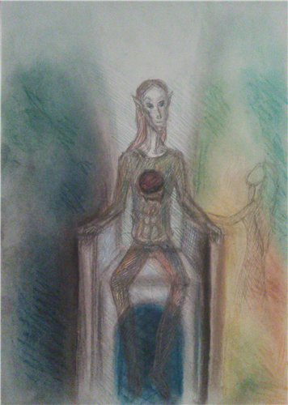
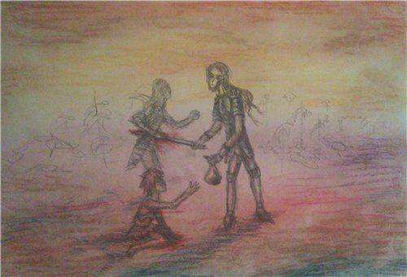
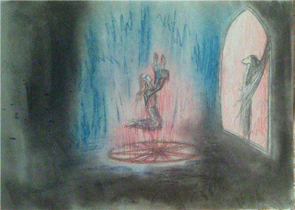

Три случая из жизни Черного Властелина

Однажды в полночь (по всем канонам ужасов, само собой), в замок Мастера Мрака и Властелина Тьмы постучалась одинокая странница в лохмотьях. Мол, пустите на ночлег, холодно – голодно, и все такое… Подхватили невзрачную кучку тряпья мокрого и доставили пред черны очи Повелителя…
- Кто ты и зачем пожаловала? – по традиции прошипел Всетемнейший.
- Холодно, Ваша светлость… То есть, Ваша Темность, Мрачность… - залепетала попрошайка.
- Эх.. Всем вон! – гаркнул правитель, и слуг словно ураганом унесло. - А теперь кончай морочить мне голову, показывай истинный облик.
- Что ж вы, как же можно помыслить… - тут она вмиг заткнулась, и, ловко увернувшись от удара костяным жезлом, обернулась прекрасной девицей – духом, вечно молодой и словно невесомой. – Хех… Ловко раскусил ты меня, Темнейший… Но дошли до Чертогов Света вопли людские, жалобы на тебя, супостата окаянного… Прекрати истязать народ, правь, как полагается! Иначе лопнет терпение богов, худо тебе будет…
- Благодарю за заботу, дух, а теперь пошла вон, - с этими словами он поднялся с трона и, позевывая, направился в кабинет с намерением наконец-то разобрать накопившуюся документацию, потеряв к небесной посланнице всякий интерес (Темнейший сам заведовал канцелярией, избегая услуг секретарей). Неугомонная революционерка летела следом, продолжая выкрикивать лозунги вроде «Свобода массам!», «Долой прогнившее самодержавие!»…
Так, в принципе, и ночь прошла: после работы в канцелярии Темный провел очередной внеплановый смотр войск, добавил пару новых мазков к «долгоиграющей» картине (он писал ее последние двадцать лет; пока весенний полдень выглядел неубедительно, учитывая, что настоящего солнца правитель никогда не видел), покормил огненного дракончика Спайка (кушал тот очень редко: приблизительно, раз в два года, - но метко, как говорится; и никто, естественно, кроме Темного, не мог приблизиться к нему) и, наскоро оседлав толстого вредину, слетал в горы проверить надежность укреплений (а то, мало ли, вдруг завтра Светлым ударит в голову налет устроить). Все это время дух летела следом, понося его, на чем свет стоит.
Когда уже первые солнечные лучи робко коснулись стен Темной Цитадели и Владыка приготовился ко сну (чтобы нанести дружественный визит предводителю горных шаманов: ведь гораздо быстрее сделать это в астрале, тем более, что этот народ почти все время пребывает в трансе), он все-таки спросил:
- Ну, чего же ты хочешь?
- Эээ… Ты, что, не слушал?! Да боги так прогневаются!! Прекрати жить засчет масс народных!
- Все ясно… - секундная вспышка – и девица мгновенно заткнулась, будучи скована льдом, после чего была прямиком отправлена обратно на небеса (радужный телепорт работал безотказно).
- Глупышка… Поживи с мое, потом поговорим… - прошептал правитель, погружаясь в сон.

Близился полдень, а Темный все не мог заснуть. Ворочался, вздыхал.… Жалел, что вспомнил о том случае. Недоумевал, отчего он мог стать столь сентиментальным.
Около пятнадцати лет назад во время ликвидации повстанцев (“Во всем виновата иностранная пропаганда” - был убеждён правитель; до этого крестьяне вели себя как полагается: выполнил работу в срок - получил достойную зарплату, произошла задержка - гонорар уменьшается. И не было недовольства, ведь все по-честному. Потом будто все с ума посходили, все им мало… А казна, кстати, не резиновая) произошла эта секундная встреча. Он несся по бранному полю, словно Ангел Смерти, вмиг превращая недовольных в кровяные бифштексы. Даже заклятий никаких не творил - хватало одного клинка. Крестьяне дрожали, как листья в грозу. И правильно, ведь раньше он никогда не применял к ним столь радикальных методов наказания.
И вот, опьяненный видом крови и воплями корчащихся в предсмертной агонии созданий, он вдруг споткнулся… о ребёнка. Что забыл мальчишка на поле боя?? Худенький, весь в пыли и грязи, истекающий кровью (кто-то в пылу сражения отрубил ему ногу), он рыдал навзрыд, звал мать… Тут Тёмный не выдержал: достал из-за пазухи кошель с монетами и кинул малому, мимоходом отправив на тот свет очередного повстанца (“Вот интересно, никогда не знаешь, что может пригодиться” - мелькнуло в голове; собирался в бой он впопыхах, вот и забыл деньги в кармане. А для маленького это ощутимая помощь). Два огромных изумрудных глаза уставились на грозного правителя…
Где он его оставил тогда? На том же месте или перенес за пределы побоища? Тёмный не мог вспомнить… Какая разница? Одной жизнью больше, одной меньше… Но не давало это ему покоя, и все тут.
Едва дождавшись наступления сумерек, Лорд, наскоро сотворив заклятье поиска и приняв образ тумана, отправился в ближайшую деревню, чтобы раз и навсегда покончить с этим…
Аккуратный домик на окраине. В единственном окошке мерцает лучинка. У тёплой печки сидит симпатичная девушка, рыженькая, с глазами цвета изумруда… и чистит съёмный стальной протез, что-то тихонько напевая… Да… Конечно, это могла быть девочка… Но почему?... “Ладно, пойду отдохну” - решил Тёмный и растворился в наступающей ночи. А на пороге домика лежал небольшой туго набитый мешочек.
Вот и наступил тот день. Все жители Тёмной Стороны были так рады и, возможно, устроили бы грандиозный праздник, если б, конечно, Властелин одобрил это.
Как всегда, Тёмный произнёс краткую речь, стоя на балконе своей Цитадели, после чего все ворота, окна, двери слуги заперли, задернули чёрные гардины и разошлись по домам. А Повелитель принялся за дело...
Да, настал день ежегодного ритуала плодородия. Во всех соседних государствах его проводили верховные маги, но правитель Тёмной Стороны всегда совершал это действо сам, в обстановке полной секретности. И на то были весомые причины.
Полумрак. Огромный ритуальный зал в подвале Цитадели. Эхо от шагов Тёмного, постепенно усиливаясь, превращается, наконец, в зловещий гул, доносящийся со всех сторон. Агатовый пол, как всегда, в идеальном состоянии: только уход за ним может доверить Лорд местным жрецам, увы, увы…
Встав на середину помещения, Тёмный начал, не медля. Низкий гортанный голос, звуки, составляющие основу языка более древнего, нежели все наречия, известные человечеству. Радость, тревога, предвкушение и непонятная мука лились неукротимой рекой из его уст. Темп нарастал, а потом стало происходить, собственно, то, что Тёмный просто не мог показать подданным: он, не прекращая творить заклятье, наносил себе глубокие раны по всему телу, причём в строго определённом порядке, отчего на коже проступила вязь странных символов. Скоро, наверное, не осталось ни одного целого места, пол из чёрного сделался красным… Но правитель словно не замечал боли: он просто не мог позволить себе прерваться.
И вот, наконец, пол покрыли знаки магического круга, появилось знаменитое Зеркало Правды…
О, приветствую, брат! Какая приятная встреча. Видимо, срок подошёл, в другое время ты не спешишь поговорить. - раздался вдруг насмешливый голос. Он исходил, казалось, отовсюду.
Я совершил просимое. Отпусти теперь.
Ну вот… А пообщаться? Родная кровь, все-таки… Кстати, как ты?
…
Эх. Отмалчиваешься, как всегда. Ладно, получай свой “пряник”. - поверхность Зеркала словно таяла, из матовой становясь будто прозрачной. Тёмный подошёл ближе (теперь можно было шевелится, ведь долг перед страной он выполнил).
Да. Это он, настоящий, без масок и фальши. Существо, взиравшее на мир пронзительно яркими желтыми глазами, собственно, и являлось Властелином Тёмной Стороны. Тело его будто состояло из тёмного плотного тумана, который в то же время немного менял цвет, в зависимости от настроения; огромные кожистые крылья, казалось, были идеальны, они едва заметно трепетали, словно просили хозяина:”Давай полетаем!”. Но… Время полётов, бесполезных игр и забав давно прошло, и Тёмный знал это.
...Вот скажи, зачем ты взял на себя это бремя правления? Поступился могуществом, возишься с грязными крестьянами… Да они первые отрекутся от тебя, если узнают! - не унимался невидимый братец. - Фррр… Должно быть, до сих пор веришь в долг, честь, достоинство, воздаяние. Но все это - пыль, ничто… Если б ты послушал меня тогда…
Если бы тебя действительно интересовал мой комфорт, ритуал был бы совсем другим. - тихо произнёс Тёмный и вернулся в круг, все так же мерцавший в центре зала. - А что до всего остального… Сам знаешь. Теперь отпусти меня.
Ты всегда был слабаком, даром что старший. - хохотнул голос, вернее, его обладатель, так и не пожелавший показаться. - Что ж, иди, раз хочешь. Может, в следующий раз будешь умнее.
Зал погрузился в полумрак. Исчез круг, как и Зеркало, на полу не осталось ни пятнышка: такова ежегодная дань за благополучие этой местности… Ещё два дня никто не осмелится подойти к замку. Есть время.
До встречи… - едва слышно произнёс Тёмный, и в глубине его усталых глаз цвета льда будто сверкнул огонёк. Ещё не конец...



Автор: SoulDark.
(специально для vampirecommunity.ru)
[Наверх]